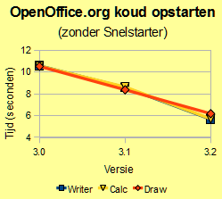
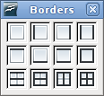

OpenOffice.org 3.2.0- nieuwe mogelijkheden
Algemene verbeteringen
Sneller opstarten
OpenOffice.org 3.2 Calc en Writer hebben zijn bij een 'koude start' 46% sneller in vergelijking met versie 3.0, die ruim een jaar geleden uitkwam. Dit blijkt uit testen door onze ontwikkelaars (resultaten zullen variëren op verschillende besturingssystemen en hardware).
Ondersteuning voor ODF
Open Document Format (ODF) voor officebestanden (gedragen door OASIS), zorgt voor internationale compatibiliteitscriteria voor de elektronische/digitale opslag van documenten.
Deze standaarden zijn van belang voor interoperabiliteit en intelligente informatie-uitwisseling en zoeken van informatie. Daardoor kunnen bestanden die vandaag op een willekeurig computersysteem zijn gemaakt, leesbaar blijven voor andere computersystemen, overal, ook met de technologie van de toekomst.
OpenOffice.org 3.2 is uitgebreid overeenkomstig ODF 1.2, en sluit beter aan bij de specificaties van OASIS ODFF/OpenFormula.
- OpenOffice.org 3.2 geeft bij het opslaan een waarschuwing, als mogelijkheden van ODF 1.2 Extended zijn gebruikt, omdat nog niet elk programma dat ODF ondersteunt, die superset van ODF zal ondersteunen.
- Er is nu een integriteitscontrole voor documenten, die bekijkt of een ODF-document voldoet aan de ODF-specificatie (dit heeft voornamelijk betrekking op documenten in ODF 1.2). Indien in een document een inconsistentie wordt aangetroffen, wordt het bij het openen behandeld als zijnde beschadigd, en biedt OpenOffice.org aan om het document te repareren .
Ondersteuning voor andere bestandsformaten
OpenOffice.org 3.2 verbetert de ondersteuning voor andere algemeen gebruikte typen documenten.
- Met wachtwoord beveiligde Microsoft Office XML bestanden (ondersteunde documenttypen: MS Word 2007 documenten (*.docx, *.docm); MS Word 2007 sjablonen (*.dotx, *.dotm); MS Excel 2007 documenten (*.xlsx, *.xlsm); MS Excel 2007 binaire documenten (*.xlsb); MS Excel 2007 sjablonen (*.xltx, *.xltm); MS Powerpoint 2007 documenten (*.pptx, *.pptm); MS Powerpoint 2007 sjablonen (*.potx, *.potm)).
- OLE-objecten, besturingselementen voor formulieren en draaitabellen kunnen nu worden gelezen vanuit MS Excel 2007 documenten (*.xlsx, *.xlsb).
- Ondersteuning voor encryptie binnen het Microsoft Word 97/2000/XP-filter: Microsoft Word-documenten kunnen nu ook met wachtwoord worden opgeslagen (met behulp van het standaard Microsoft Office RC4-algoritme).
- Filters voor AportisDoc en PocketWord ondersteunen nu type-detectie gebaseerd op DocType. Nu kunnen deze bestanden dus worden geladen zonder expliciet het bestandstype te kiezen bij het openen van het bestand.
- Bij het schrijven van tekenreeks-gegevens naar SYLK-bestanden, worden ingebedde dubbele aanhalingstekens niet langer geëscaped bij verdubbeling; punt-komma's worden nu geëscaped bij verdubbeling. Dit verbetert de compatibiliteit met bestanden die zijn gemaakt door andere toepassingen.
Ondersteuning voor op Postscript gebaseerde OpenType-lettertypen
Er bestaan veel commerciële en gratis OpenType-lettertypen van hoge kwaliteit die zijn gebaseerd op Postscript. Zij worden nu ondersteund voor opmaak, afdrukken, PDF-export en weergave.
Writer
Ondersteuning voor Mediawiki verplaatst naar een extensie
Het filter voor MediaWiki maakt niet langer deel uit van de installatie van OpenOffice.org om conflicten te voorkomen. In plaats daarvan is het een deel van de extensie Wiki Publisher. Een bijkomend voordeel is, dat het filter ook kan worden bijgewerkt zonder te hoeven wachten op een volgende uitgave van OpenOffice.org.
Calc
Celranden toepassen op meerdere selecties
Voorheen was het alleen mogelijk om celranden toe te passen op één enkel rechthoekig celbereik. Vanaf nu kunnen randen worden toegepast op elke selectie van cellen. Op elk rechthoekig bereik van een selectie worden binnenste/buitenste randen toegepast.
{kind=link}
Automatisch vullen handelt nu meer gevallen af
Indien de startcel voor Vullen een getal bevat aan het begin en aan het einde, en er staat geen spatie achter het eerste getal, wordt het getal aan het einde nu verhoogd. Dit maakt het eenvoudiger mogelijk om bijvoorbeeld lijsten van IP-adressen te maken (10.0.0.1 wordt gevolgd door 10.0.0.2).
Verbeteringen bij sorteren
 Indien "Sorteren" wordt uitgevoerd met een selectie waarvan het onwaarschijnlijk is dat de gebruiker die als bereik zou willen gebruiken, zal een nieuw dialoogvenster vragen of de selectie moet worden uitgebreid met aangrenzende cellen.
Indien "Sorteren" wordt uitgevoerd met een selectie waarvan het onwaarschijnlijk is dat de gebruiker die als bereik zou willen gebruiken, zal een nieuw dialoogvenster vragen of de selectie moet worden uitgebreid met aangrenzende cellen.
Indien een celbereik wordt gesorteerd met behulp van de werkbalkknoppen "Oplopend sorteren" of "Aflopend sorteren", wordt de celopmaak nu gesorteerd met de cellen.
Betere afhandeling van samengevoegde cellen
Samengevoegde cellen kunnen nu vanaf het klembord in andere samengevoegde cellen worden geplakt. Er wordt geen foutbericht meer gegeven, maar het samenvoegen van de oude cellen wordt opgeheven.
Invoegen of verwijderen van cellen, kolommen of rijen bij samengevoegde cellen, is nu mogelijk. Eerder werd er een foutbericht gegeven. Nu wordt het samengevoegde bereik vergroot/verkleind.
Complex knippen en plakken
Deze mogelijkheid vergoot de functionaliteit van kopiëren en plakken in Calc, hetgeen het kopiëren van een aantal niet-aaneensluitende bereiken mogelijk maakt. Indien geplakt worden alle gekopieerde gegevens bij elkaar gezet in één enkel bereik, ofwel horizontaal óf verticaal. Er zijn een aantal beperkingen als bereiken worden gekopieerd, om er voor te zorgen dat het geplakte bereik een rechthoekig bereik wordt.
Verbeteringen aan statistische functies
- De 4e parameter van NORM.VERD is nu optioneel.
- 0 of ONWAAR berekent de kansdichtheidsfunctie. Elke andere waarde of WAAR of weggelaten berekent de cumulatieve verdelingsfunctie.
- Indien weggelaten, wordt 1 geschreven naar bestanden voor achterwaartse compatibiliteit.
- De 2e en 3e parameter van LOG.NORM.VERD zijn nu optioneel, een optionele 4e parameter is toegevoegd.
- De 2e parameter, gemiddelde, heeft de standaardwaarde 0 indien weggelaten.
- Indien weggelaten, wordt 0 geschreven naar bestanden voor achterwaartse compatibiliteit.
- De 3e parameter, standaardafwijking, heeft de standaardwaarde 1 indien weggelaten. Indien weggelaten, wordt 1 geschreven naar bestanden voor achterwaartse compatibiliteit.
- De 4e parameter, cumulatieve, wordt gedefinieerd als - 0 of ONWAAR berekent de kansdichtheidsfunctie. Elke andere waarde of WAAR of weggelaten berekent de cumulatieve verdelingsfunctie. - Indien een waarde werd opgegeven, kunnen eerdere uitgaven die het bestand lezen de functie niet interpreteren en zullen zij een fout teruggeven.
Behoud van het teken voor een nieuwe regel in formules
Tekens voor nieuwe regels die zijn gemaakt met Control+Enter in cellen met meerdere regels worden nu behouden in werkbladformules. Eerder werd het teken voor de nieuwe regel vervangen door het teken voor een spatie. Het teken voor de nieuwe regel kan worden gezocht in de functies VIND.SPEC of [HORIZ/VERT].OPZOEKEN of VERGELIJKEN met de reguliere uitdrukking \n.
Conversie van getallen in tekenreeksen
Bij het interpreteren van een formule-uitdrukking, wordt een tekenreeks-inhoud nu geconverteerd naar numerieke waarden, als de conversie onbetwistbaar is. Er wordt een #WAARDE! fout ingesteld, als er geen onbetwistbare conversie mogelijk is. Voorloop- en eindspaties worden genegeerd.
Opmerking: converteren tijdens werken is natuurlijk significant trager dan berekenen met numerieke waarden. Gebruikers hebben misschien een voorkeur voor de extensie Convert Text to Number (CTN) om tekstuele getallen te converteren naar permanente numerieke waarden.
Meer voorwaarden kiezen in filters
 Het dialoogvenster "Standaardfilter" toont nu 4 in plaats van 3 voorwaarden, en heeft een schuifbalk die het mogelijk maakt om toegang te krijgen tot in totaal 8 voorwaarden. Het ondersteunt nu ook de filtervoorwaarden 'bevat', 'bevat niet', 'begint met', 'begint niet met', 'eindigt met' en 'eindigt niet met'.
Het dialoogvenster "Standaardfilter" toont nu 4 in plaats van 3 voorwaarden, en heeft een schuifbalk die het mogelijk maakt om toegang te krijgen tot in totaal 8 voorwaarden. Het ondersteunt nu ook de filtervoorwaarden 'bevat', 'bevat niet', 'begint met', 'begint niet met', 'eindigt met' en 'eindigt niet met'.
Verbeterd wisselen in verwijzingen
De sneltoets Shift-F4, om te wisselen tussen relatieve en absolute verwijzingen in formules, kan nu worden gebruikt voor een selectie van cellen, en behandelt dan alle formulecellen in de selectie.
Veel nieuwe factoren in CONVERTEREN_ADD
De werkbladfunctie CONVERTEREN_ADD (in andere toepassingen bekend als CONVERTEREN) heeft veel meer conversiefactoren geïmplementeerd, zoals die zijn gedefinieerd in OASIS ODFF/OpenFormula.
{kind=link}
Nieuwe functies UNI.CODE en UNI.TEKEN
De nieuwe werkbladfuncties UNI.CODE en UNI.TEKEN zijn geïmplementeerd zoals gedefinieerd in de OASIS ODFF/OpenFormula-specificatie.
- UNI.CODE geeft het codepunt voor de Unicode Standard / ISO 10646 terug dat overeenkomt met het eerste teken van de tekstwaarde;
- UNI.TEKEN (UNICODE TEKEN) geeft het teken terug voor een geldig Unicode codepunt.
Draw en Impress
Invoegen notities toegevoegd
In Draw en Impress kunnen nu notities worden ingevoegd, om het samenwerken te ondersteunen.
Veld Aantal pagina's toegevoegd
In Draw en Impress kan nu het tekstveld "Aantal pagina's" worden ingevoegd.
Math
Wijziging in menu's van Math
Het menuitem "Beeld / Selectie" in Math heet nu "Beeld / Formule-elementen".
Base
Aanpassen van de Assistent Database maken
Met een nieuwe configuratieoptie kan worden ingesteld of de keuze "Nieuwe database maken" wordt getoond in de assistent "Database maken" (gestart via Bestand/Nieuw/Database).
Eenvoudiger kopiëren van query's tussen databasedocumenten
Bij het kopiëren van query's tussen databasedocumenten, zal Base niet langer vragen naar een doelnaam, tenzij de kopieerbewerking een reeds bestaande tabelnaam zou overschrijven.
In-/uitzoomen in databaseformulieren
In databaseformulieren kan nu worden in-/uitgezoomd, net zoals in andere documenten. De huidige functionaliteit <Ctrl+Scrollwiel> is aangevuld met een menuitem Beeld / In-/uitzoomen en met de zoombalk in de statusbalk.
Meer intelligent importeren in Base
De Assistent Tabel kopiëren bevat nu een aanvullend keuzevak dat is ingeschakeld als gegevens in RTF- of HTML-opmaak in een database wordt gekopieerd. Het keuzevak heeft de naam: Gebruik eerste regel als kolomnamen: indien aangevinkt wordt de eerste rij gebruikt om de kolomnamen te identificeren, indien niet aangevinkt wordt de eerste rij als gewone gegevens behandeld.
{kind=link}
Bekijk voor meer details over nieuwe mogelijkheden in Base alstublieft de wiki.
Chart
Nieuwe diagramtypen
 De Assistent Diagram - gebruikt om diagrammen te maken - bevat nu ook Bubbel en een nieuwe variant van Net-diagrammen: Gevuld net (Radar) diagrammen.
De Assistent Diagram - gebruikt om diagrammen te maken - bevat nu ook Bubbel en een nieuwe variant van Net-diagrammen: Gevuld net (Radar) diagrammen.
Verbeteringen voor gebruik van Chart
De gebruikersinterface voor Chart is veel handiger geworden. De algemene benaming Objecteigenschappen is vervangen door meer specifieke termen zoals Legenda opmaken..., Y-balk opmaken... enzovoorts. Menu's zijn meer afgestemd op de geselecteerde delen, op de context. Het bewerken van de onderdelen is nu slechts een muisklik verwijderd. Kijk voor alle details op de GullFOSS blogpost.
Verbeteringen aan gegevenslabels
De mogelijkheden met gegevenslabels zijn uitgebreid. Het is nu mogelijk om gegevenslabels te roteren. Dit is in het bijzonder handig voor kolomdiagrammen om het overlappen van de verschillende labels te voorkomen.
Pagina Aziatische typografie voor elementen van diagrammen
Een nieuwe tabpagina Aziatische typografie is nu beschikbaar voor Titel, Legenda, Assen en Gegevensreeksen. Het bevat een optie om de afstand tussen de verschillende typen tekst in of uit te schakelen.
Internationalisatie en Localisaties
Nieuwe ondersteuning voor Locales
OpenOffice.org 3.2 voegt localegegevens toe voor Oromo_Ethiopisch [om-ET], Uyghur_Chinees [ug-CN], Oud Grieks [grc-GR], Somali_Somalisch [so-SO], Lausitz, Neder [dsb-DE] en Opper [hsb-DE, Asturiaans_Spaans [ast-ES], Jiddish_Israëlisch [yi-IL], Arabisch (Oman) [ar-OM], Sardiniaans_Italiaans [sc-IT, en Quechuaans (Ecuador) [qu-EC].
Zoals gewoonlijk is de locale te selecteren voor tekens en spellingscontrole, als standaard locale en standaard documenttaal, en is beschikbaar voor getalsopmaak en nummering van overzichten - bekijk de Release Notes voor details.
Japanse naam-volgorde
In een Japanse locale is de volgorde van de velden Voornaam / Achternaam op de tabpagina Gebruikersgegevens omgekeerd. Deze mogelijkheid is niet gebonden aan de taal van de UI, maar aan de geselecteerde locale.
Ondersteuning voor Graphite lettertype technologie
OpenOffice.org ondersteunt nu de technologie voor Graphite lettertypen. Daarmee is het mogelijk om "slimme tekens" te creëren, die gebruikt kunnen worden in schrijfwijzen met complexe gedragingen. Bijvoorbeeld het groter of kleiner worden van tekens, afhankelijk van de context, of het splitsen of samenvoegen van tekens, het veranderen van de volgorde afhankelijk van de context. Vele schriften over de wereld kennen zit soort tekens.